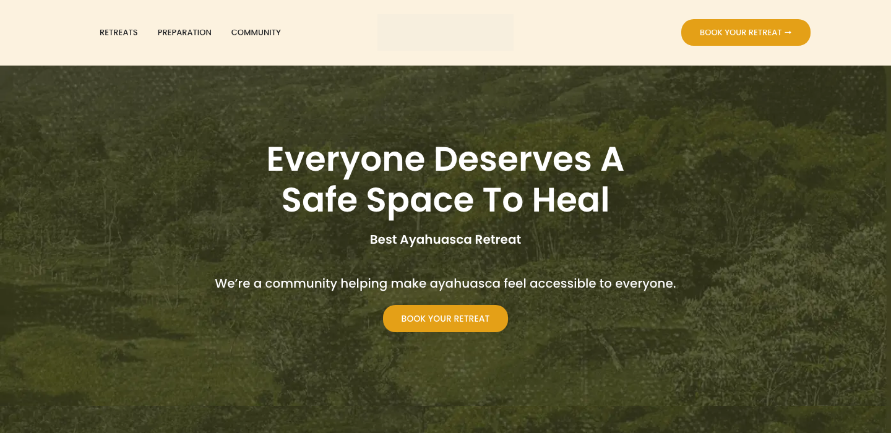
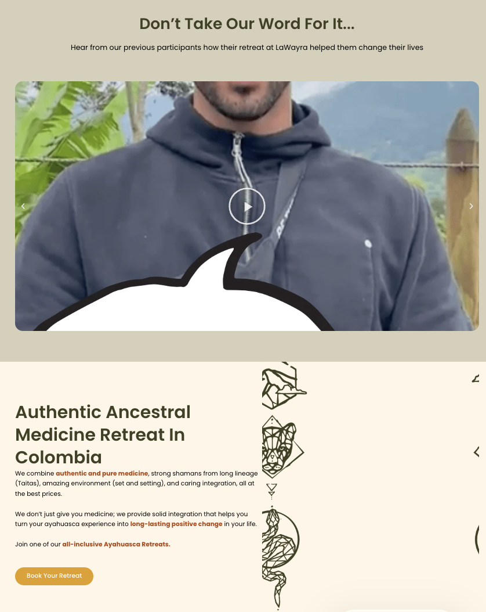
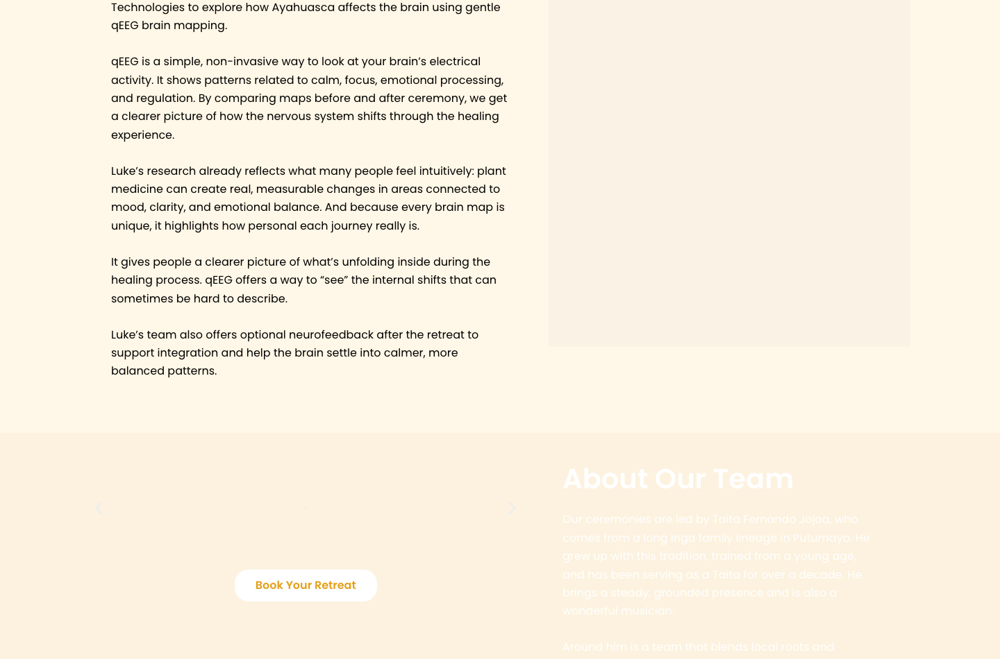
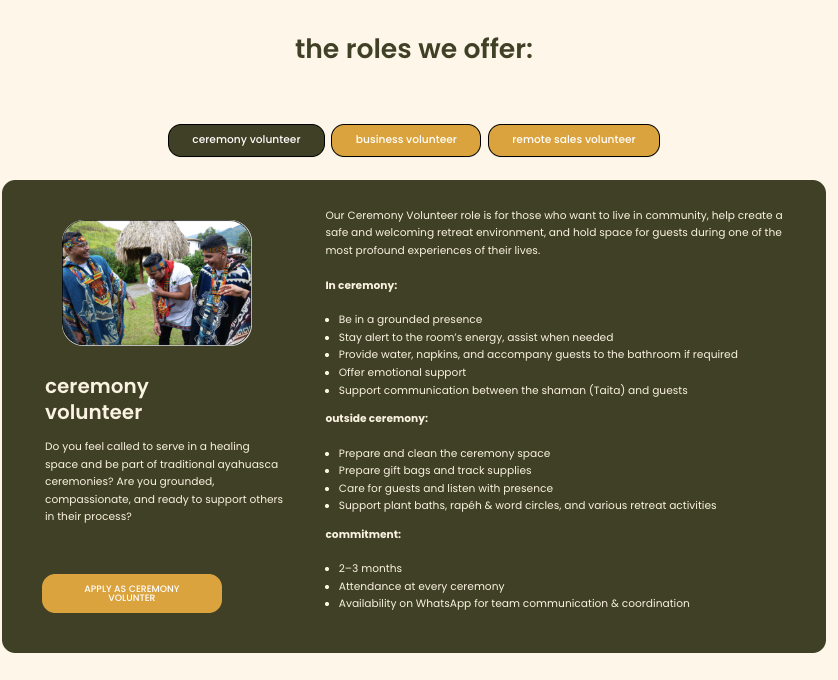
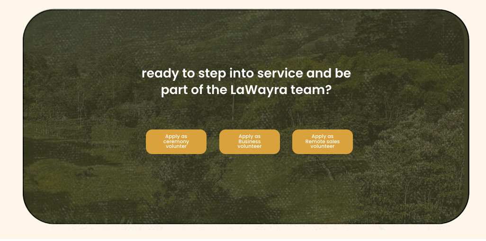
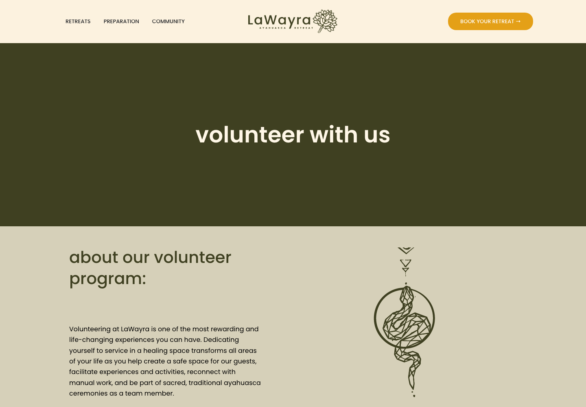
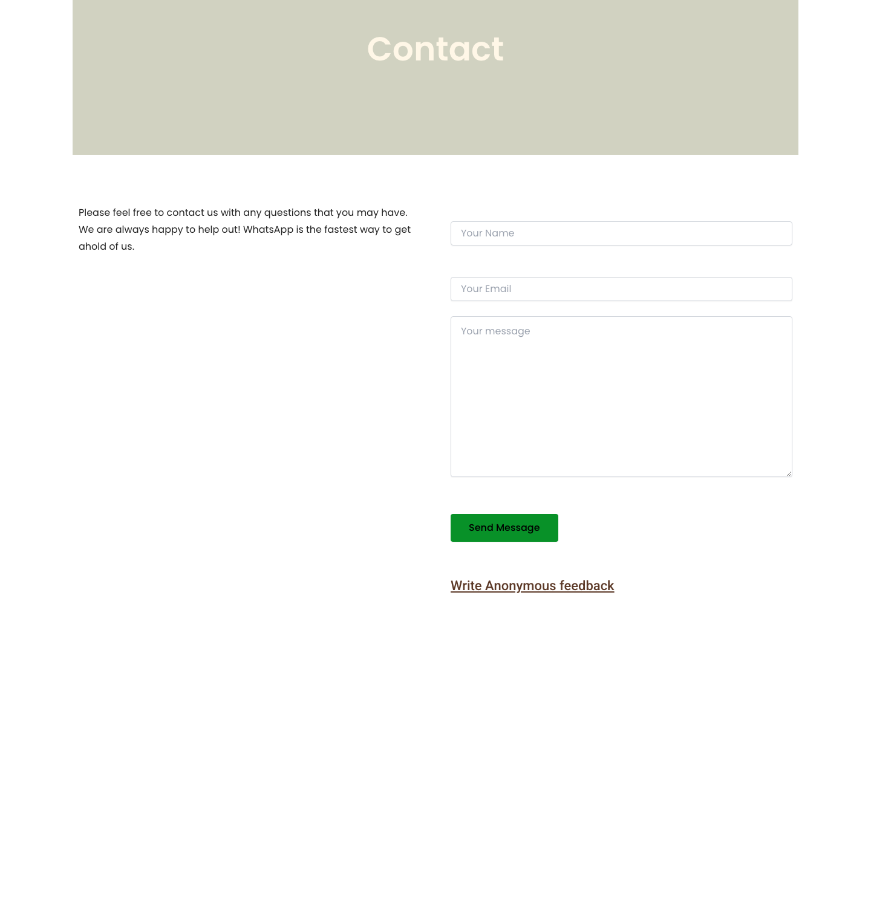

LaWayra Staging Site — Consolidated Developer Feedback
For: Fahad
Staging URL: https://ayahuascaincolombia.com/staging/
Marcus's 8-min walkthrough (Loom): https://www.loom.com/share/47686d2169ac4026b52af2fd228fcf11
This document consolidates feedback from Marcus, Sarah, Gabor, and Emily. Duplicates have been merged. Each item lists the page, device (Desktop / Mobile / Both), and a clear action.
How to read this doc
- [BOTH] = applies to desktop and mobile
- [DESKTOP] = desktop only
- [MOBILE] = mobile only
- [HIGH] = blocking / broken functionality
- [MEDIUM] = visible issue / important polish
- [LOW] = minor improvement / nice-to-have
Table of Contents
- Site-wide (all pages)
- Navigation / Header
- Homepage
- Retreats / Events Page
- Accommodation Page
- Volunteer Page
- Contact Page
- Newsletter Section
- Preparation Page
- Resources / Blog (new section to build)
- Email Capture (future)
1. Site-wide (applies to all pages)
2. Navigation / Header
3. Homepage
URL: https://ayahuascaincolombia.com/staging/
3.1 Hero section ("Everyone Deserves A Safe Space To Heal")
-
[MEDIUM] [BOTH] "Best Ayahuasca Retreat" is too vague. Replace with credible, specific copy.
Suggested: "South America's top-rated ayahuasca retreat — 755 five-star reviews, near Medellín."
— Emily

Current hero on staging — "Best Ayahuasca Retreat" and the subheadline are both too vague.
-
[MEDIUM] [BOTH] Subheadline doesn't land. Current: "We're a community helping make ayahuasca feel accessible to everyone". Please change to one of these (Marcus to pick — default to option 2):
1. "We're a community built around safe, intentional ayahuasca experiences."
2. "We're a community built around authentic, safe, and intentional ayahuasca experiences."
3. "We're a community dedicated to safe, authentic, and intentional ayahuasca journeys."
— Emily
3.2 Retreat information
-
[MEDIUM] [BOTH] Show retreat details earlier on the homepage. Visitors should quickly see the value and what's included. Show each retreat option (4-day, 7-day, 11-day) with a bullet list of inclusions, followed by available dates below.
— Emily
-
[MEDIUM] [BOTH] Add an "About the Property" section covering: outdoor gym, pool, creek, hammocks, solo-time tables, communal areas with books and activities.
— Emily
-
[LOW] [BOTH] Add "+" after prices (e.g. "$1,245+") because accommodation is added on top.
— Emily
3.3 Testimonials section ("Don't Take Our Word For It")
-
[HIGH] [BOTH] The testimonial section is not formatted correctly — including the section below it with the icons. Please rebuild this section.
— Sarah, Marcus

The testimonial thumbnail shows only a hoodie/chest (no face), and the section below has the same formatting problem with the icons.
-
[HIGH] [DESKTOP] Testimonials section is too large. Make it smaller and use a horizontal carousel of vertical video cards (3 visible at a time, scrollable left/right with working arrows).
— Marcus, Emily, Gabor
-
[HIGH] [BOTH] Video thumbnails are bad. The preview image is too zoomed in — you can't see the person's face. Use clear thumbnails that show each person's face (ideally 3 thumbnails: two women, one man).
— Gabor, Marcus, Emily
-
[HIGH] [BOTH] Vertical video plays inside a horizontal modal background. When you click a testimonial video, the modal background is horizontal but the video itself is vertical. Use a vertical video player.
— Gabor
-
[MEDIUM] [BOTH] Add a caption under each video with: person's name, country/location, and a one-line outcome.
Example: "Andrew, USA — 'I hadn't cried in 10 years. I cried for four days.'"
— Emily
-
[HIGH] [DESKTOP] Arrows in the testimonials section do not scroll. They are visible but clicking them does nothing. Please make them functional.
— Marcus
-
[HIGH] [MOBILE] Mobile testimonials do not scroll either. The mobile version looks better visually than desktop (shows the whole thumbnail), but it is not scrollable. Please make it a working carousel. If you cannot make it scroll, then hide testimonials on mobile only (keep them on desktop).
— Marcus
3.4 About the Team
-
[MEDIUM] [BOTH] Move "About the Team" section ABOVE "The Wisdom is Ancient" (team credibility should come before the science section).
— Emily
-
[MEDIUM] [BOTH] Mention Sam by name. People who find LaWayra through his podcast should see him here and make the connection.
— Emily
-
[MEDIUM] [BOTH] Surface team credentials. Note that team members hold degrees in neuroscience, work as music therapists, etc. Pull in as much credibility as possible.
— Emily
3.5 "The Wisdom is Ancient" (science section)
-
[HIGH] [BOTH] This section is too long and has no clear takeaway. Replace the current 5 paragraphs with the condensed version below.
— Gabor, Emily
New Headline: Where ancient ceremony meets modern neuroscience
New Subheadline: LaWayra is one of the only retreats in the world where you can witness your own healing — before and after, in data.
New Body (replaces all 5 paragraphs):
We partner with researcher Luke Jensen from NewMind Technologies to map guests' brain activity using qEEG — a simple, non-invasive read of your brain's electrical patterns. Comparing maps before and after ceremony, the shifts are measurable: calmer nervous systems, stronger emotional regulation, greater clarity. What people feel but can't quite articulate, the science is beginning to confirm.
Optional neurofeedback after your retreat helps the brain settle into those new patterns — so the work stays with you.
New CTA: See what the research is finding →

Current section has 5 long paragraphs about qEEG and Luke Jensen — no clear takeaway. Replace with the condensed copy above.
3.6 Location section
3.7 Homepage — Mobile-only fixes
4. Retreats / Events Page
URL: https://ayahuascaincolombia.com/staging/ayahuasca-events/
5. Accommodation Page
6. Volunteer Page
Both Desktop & Mobile
-
[HIGH] [BOTH] When clicking the buttons, the image doesn't change. The button click should swap the corresponding image. Please fix.
— Sarah

"the roles we offer" with three buttons (ceremony volunteer, business volunteer, remote sales volunteer). Clicking each button should swap the image and body content on the left, but currently nothing changes.
-
[MEDIUM] [BOTH] One of the content boxes is too big — it should be sized to fit its actual content (not stretched).
— Sarah

The green "ready to step into service" box is huge but only contains 3 small buttons. Shrink the box to fit the content.
-
[MEDIUM] [BOTH] Too much space above "Ready to Step into Service". Reduce the gap between the title and the start of that section.
— Marcus

Top of the Volunteer page — note the large empty area between the hero and the next section.
-
[MEDIUM] [BOTH] Fix button capitalization. Only the "A" in "Apply" should be capitalized. The rest of the words should be lowercase:
- "Apply as Ceremony Volunteer" → "Apply as ceremony volunteer"
- "Apply as Business Volunteer" → "Apply as business volunteer"
- "Apply as Remote Sales Volunteer" → "Apply as remote sales volunteer"
— Marcus
Mobile only
-
[MEDIUM] [MOBILE] Center-align the top hero section. Keep the body content left-aligned.
— Marcus
-
[MEDIUM] [MOBILE] Fix inconsistent spacing — too much or too little space in several places. Make spacing consistent throughout the page.
— Marcus
-
[MEDIUM] [MOBILE] One headline needs to fit on a single line and be centered (currently wrapping incorrectly).
— Marcus
-
[MEDIUM] [MOBILE] Some text appears too far to the left. Please center it on mobile.
— Marcus
7. Contact Page
-
[MEDIUM] [BOTH] Change the background color to beige.
— Sarah
-
[MEDIUM] [BOTH] Too much empty space at the bottom of the page. Tighten the layout so there isn't an empty section at the bottom.
— Marcus
-
[HIGH] [BOTH] Add WhatsApp contact info. There is currently no WhatsApp contact info on this page. Please add WhatsApp contact details (number / link).
— Marcus

Contact page — body mentions "WhatsApp is the fastest way to get a hold of us" but no actual WhatsApp link/number is shown. Also note the large empty area between the form and the footer.
-
[MEDIUM] [BOTH] Add the following content sections to the Contact page (exact copy below):
— Sarah
Section 1 heading: Still Have Questions? Contact us directly.
Body: We're here to help.
If you have any questions about bookings, payments, accommodation, transportation, or general information, feel free to reach out to our customer support team.
Juli will be happy to assist you and guide you through the process with care and clarity.
Section 2 heading: Not Sure if LaWayra Is Right for You?
Body: Choosing a retreat is a personal decision, and we want you to feel fully informed and supported.
If you'd like to learn more about the retreat experience, the ceremonies, preparation, or whether this journey is aligned for you at this moment in your life, you can book a free consultation call with one of our team members.
We're happy to answer your questions, hear your intentions, and help you decide if LaWayra is the right fit for your journey.
Button text: Book Your Free Consultation Call
8. Newsletter Section
9. Preparation Page
URL: https://ayahuascaincolombia.com/staging/preparation-for-the-retreat/
10. Resources / Blog Section (new — to build)
-
[MEDIUM] [BOTH] Build out a Resources / Blog section with two types of content:
- Educational content about ayahuasca — what it is, safety, what to expect, the science, etc. This moves hesitant visitors toward a decision.
- One post per Sam's podcast episode — so listeners who find the site can go deeper on topics they've already heard him discuss.
— Emily
-
[MEDIUM] [BOTH] Add a "Resources" or "Blog" link to the main navigation once the section exists.
— Emily
11. Email Capture / Popup (future enhancement)
This is a future enhancement — not required in this round, but documented here for planning. Fahad: please confirm whether your current setup (e.g. Mailchimp / ConvertKit / Klaviyo) supports segmented popups before we scope this.
-
Add an email capture popup that segments visitors by stage:
- Curious — Learning about ayahuasca before committing to anything.
- Considering — Ready to do it, choosing where and with whom.
- Returning — Done it before, looking to go deeper or stay connected.
- Each segment gets its own educational email flow. Example Curious flow (10–11 emails):
- You asked about ayahuasca.
- Here's where to start.
- 4,000 years old. Still misunderstood.
- What to expect the night of a ceremony.
- The question everyone has but not everyone asks.
- What changes. And what doesn't.
- There are a lot of retreats. Here's what makes us different.
- In their own words.
- A day-by-day look at the retreat.
- Flights, costs, what to bring.
- No pressure. But spots do fill up.
Looks Good (no changes needed)
- Overall design and copy direction
- Booking page
- Blog pages (existing layout, content to be expanded)
- Desktop hero / "What We're All About" section
Compiled from feedback by Sarah, Gabor, Emily, and Marcus. Sam, Andrew, and Juan had no comments at time of compilation. Please reply with questions on any item that is unclear.